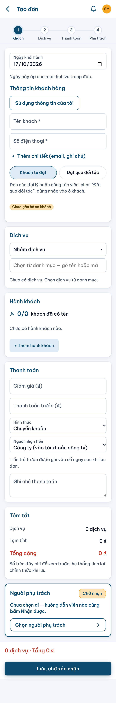
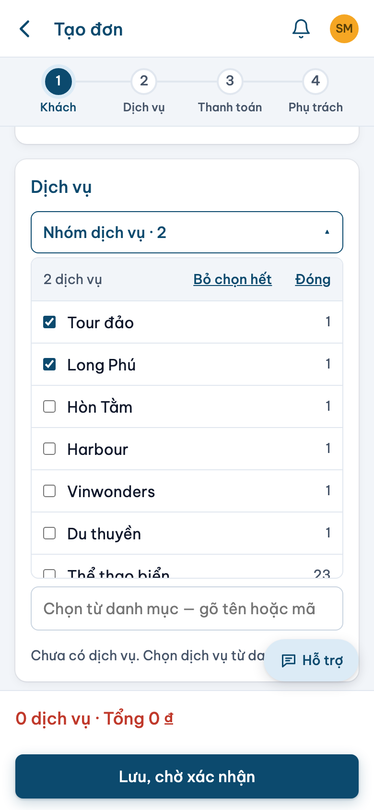
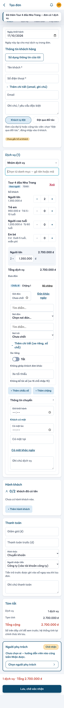
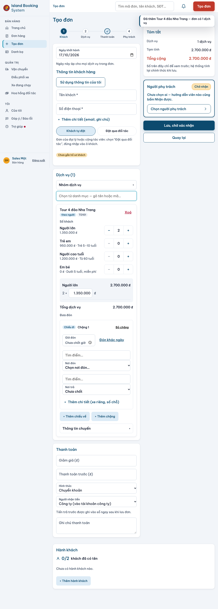

1 · Điện thoại · form vừa mở
Chưa có dịch vụ. Khung danh sách đã mở sẵn, "Tất cả" đứng đầu. Máy nhớ nhóm chọn lần trước theo tài khoản (chọn một nhóm rồi tải lại trang).
2 · Điện thoại · chọn dịch vụ
Hàng nhóm đã cuộn tới "Thể thao biển" (nhóm thứ 7). Khung lọc theo nhóm; Jetski L2 30 phút mang nhãn "✓ đã thêm", thẻ mới nằm dưới khung.
3 · Điện thoại · gõ "hòn tằm"
Tìm trong mọi nhóm, kết quả chia mục Hòn Tằm 4 · Tour đảo 6 · Thể thao biển 21. Hàng nhóm về "Tất cả"; nhóm không có kết quả mờ đi.
4 · Điện thoại · thẻ TD2 đang mở
Lưới số khách 2 cột, dòng tiền canh phải, ô "Nơi đón" đang mở gợi ý (cuộn xuống trong khung để thấy).
5 · Điện thoại · đơn ba dịch vụ
Hai thẻ gập một dòng (Jetski có chip "Chưa chốt giờ đón"), Phao chuối đang mở: một ô "Số khách", "7 khách = 2 lượt".
6 · Điện thoại · các trạng thái thẻ
Trái: đang sửa giá. Giữa: lỗi "Tối đa 50 khách." — thẻ bị ép mở dù TD2 cũng đang mở. Phải: dải đặt gấp và chip "Giá danh mục đã đổi".
7 · Điện thoại · khối khách
Mặc định "Khách lẻ" · đang tìm đối tác · đã chọn đối tác · lớp chặn nhầm (bấm "Đúng, qua Minh Travel" để thấy công tắc chuyển và con trỏ về ô tên).
8 · Điện thoại · thanh toán
Trái: chưa trả trước, hai ô "Hình thức" và "Người nhận tiền" ẩn. Phải: đã nhập 2.000.000, hai ô hiện kèm câu ghi sổ.
9 · Điện thoại · thanh dính cuối trang
Thu gọn · mở chi tiết · có cảnh báo tiền · có lỗi khi lưu. Không còn khối Tóm tắt trên điện thoại; chạm dòng tổng để mở chi tiết.
10 · Máy tính 1040 (và kiểm 1440)
Hai cột; cột phải dính: Tóm tắt, Người phụ trách, Lưu, Quay lại. Hành khách trải ngang dưới hai cột. Rê chuột lên hàng nhóm để hiện ‹ ›; Tab vào hàng nhóm rồi dùng phím mũi tên.
11 · Biến thể theo vai
Đối tác (đầu form, và phần thẻ + thanh toán: không "Sửa giá", giảm giá khoá, không "+ Dịch vụ nhập tay", ba bước) · Tài khoản lai (không có "Đơn của") · Bảng "Đổi khách" ở trang đơn.
12 · Thang nút ba cấp và Token đã dùng
| Token | Nơi dùng | Giá trị |
|---|---|---|
| {{ t.name }} | {{ t.use }} | {{ t.value }} |
Vì sao chọn dịch vụ nhanh hơn
- Hàng nhóm nằm sẵn trên màn: một chạm là lọc, không mở bảng, danh sách không biến mất — từ ba chạm còn một.
- Khung danh sách luôn mở và đứng yên: chạm dòng là thêm, "✓ đã thêm" xác nhận ngay tại chỗ, nên thêm nhiều dịch vụ liền tay mà không mất chỗ đang xem.
- Phần đầu tên in mờ, giá thẳng cột: mắt chỉ đọc phần khác nhau ("Jetski L2 (30 phút)") và so giá theo một đường dọc.
- Gõ chữ tìm trong mọi nhóm, kết quả chia mục; nhóm không khớp mờ đi nên biết ngay còn chạm được nhóm nào.
- Chỉ một thẻ mở, thẻ gập một dòng có chip báo thiếu: đơn ba dịch vụ còn khoảng hai màn thay vì năm, sáu màn tới nút Lưu.
Ghi chú riêng (đề xuất, không vẽ lên artboard)
- Cộng số trong ngoặc của 14 nhóm ra 114, không phải 113. Danh mục mẫu dùng đủ 114 dòng (trong đó Nhà hát Đó có một dòng "(ví dụ) … · chưa có giá"), nên đầu khung ghi "114 dịch vụ".
- Màu, phông, bóng theo giá trị trong repo như bạn chọn: nền trang #eaf2f8, viền #d3e1ec, bóng một lớp, chữ thân Nunito, tiêu đề và số Be Vietnam Pro 700/800.
- Thanh bên máy tính và thanh trên điện thoại vẽ theo hệ thiết kế (nền xanh). Ảnh 14/10 cho thấy bản chạy thật đang dùng nền trắng — cần chốt một bên.
- Ở "Tất cả", dịch vụ gắn sao hiện cả ở mục "★ Hay dùng" lẫn trong nhóm của nó. Nếu thấy lặp, có thể chỉ giữ ở "Hay dùng".
- Bộ 24 biểu tượng chưa có thùng rác và kính lúp; hai hình này vẽ theo cùng luật (lưới 24, nét 1,8, không tô) và được đánh dấu MỚI.
- Câu chữ cảnh báo đặt gấp, cảnh báo tiền và lỗi mất mạng là chữ đề xuất; thay bằng câu thật của máy chủ khi làm.
Hiện trạng — ảnh chụp bản chạy thật 14/10/2026
Nguồn: docs/evidence/2026-10-14-tao-don-bon-buoc/sau/ (vai Bán hàng). Cuộn trong từng khung.



